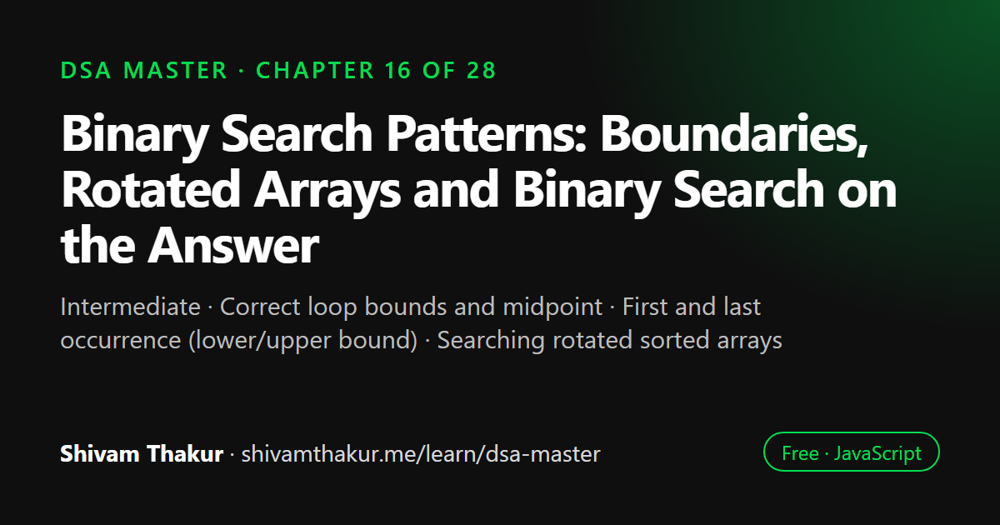

Chapter 16 of 28 · Intermediate
Binary Search Patterns: Boundaries, Rotated Arrays and Binary Search on the Answer
The Binary Search Patterns Masterclass

Binary search finds a target in sorted data by halving the search range at every step, which takes O(log n) time. Its real power is broader: any problem with a monotonic yes/no condition can be binary searched. This chapter covers correct boundary handling, first and last occurrence, rotated sorted arrays, binary search on the answer and searching 2D matrices.
In this chapter you will learn
- Correct loop bounds and midpoint
- First and last occurrence (lower/upper bound)
- Searching rotated sorted arrays
- Binary search on the answer
- Searching a sorted 2D matrix
16.0 Beyond "Find a Value in a Sorted Array"
Chapter 1 introduced binary search as the phone-book-halving strategy — O(log n) instead of O(n). If that were the whole story, it wouldn't deserve a masterclass chapter. The real power of binary search, and the reason it's one of the most-tested topics in technical interviews, is that it applies to any problem with a monotonic ("if X works, does anything more/less extreme also work?") structure — not just literal sorted arrays. This chapter builds the generalized mental model: binary search on the answer, not just binary search on an array.
16.1 The Precise Mechanics: Getting the Boundaries Right
Before generalizing, let's nail the implementation details that cause the most bugs in even the "basic" version.
function binarySearch(sortedArr, target) {
let left = 0;
let right = sortedArr.length - 1;
while (left <= right) { // NOTE: <=, not <
const mid = left + Math.floor((right - left) / 2); // NOTE: avoids overflow (see below)
if (sortedArr[mid] === target) {
return mid;
} else if (sortedArr[mid] < target) {
left = mid + 1;
} else {
right = mid - 1;
}
}
return -1; // not found
}16.2 Finding Boundaries: First and Last Occurrence
The problem: given a sorted array with duplicate values, find the first (or last) index of a target value — not just any matching index.
Dry Run: findFirstOccurrence([1, 2, 2, 2, 3], 2)
left=0, right=4
mid=2, arr[2]=2 === target! result=2. Keep searching LEFT: right=1
left=0, right=1
mid=0, arr[0]=1 < 2 -> left=1
left=1, right=1
mid=1, arr[1]=2 === target! result=1 (UPDATED — this is an earlier occurrence!). right=0
left=1, right=0 -> loop condition left<=right fails -> STOP
Final result = 1 (the FIRST occurrence of 2, at index 1) ✓16.3 Binary Search on a Rotated Sorted Array
The problem: given a sorted array that's been "rotated" at some unknown pivot (e.g., [4,5,6,7,0,1,2], originally [0,1,2,4,5,6,7] rotated), find a target value in O(log n) time.
Dry Run: searchRotated([4,5,6,7,0,1,2], 0)
arr = [4,5,6,7,0,1,2], target=0
left=0, right=6
mid=3, arr[3]=7. Not target.
Is arr[left]=4 <= arr[mid]=7? YES -> LEFT half [4,5,6,7] is sorted.
Is target(0) within [4,7)? NO (0 < 4) -> target must be in the RIGHT half. left=4
left=4, right=6
mid=5, arr[5]=1. Not target.
Is arr[left]=0 <= arr[mid]=1? YES -> LEFT half [0,1] is sorted.
Is target(0) within [0,1)? YES (0 <= 0 < 1) -> search there. right=4
left=4, right=4
mid=4, arr[4]=0. MATCH! return 4.
Result: 4 (arr[4] IS 0) ✓16.4 Binary Search on the Answer: The Generalization That Changes Everything
This is the single most important concept in this chapter, and the reason binary search deserves masterclass treatment rather than being folded entirely into Chapter 1.
The Core Insight
Definition: "Binary search on the answer" applies binary search not to a literal array, but to the space of possible answers to a problem, whenever that answer space has a monotonic property: if a candidate answer X works (satisfies some condition), then every answer more extreme in one direction (e.g., every value ≥ X, or every value ≤ X) also works — or, symmetrically, fails.
Real-Life Analogy: Finding Your Maximum Squat Weight at the Gym
Imagine you don't know your one-rep-max squat weight, but you know this: if you can successfully squat 200 lbs, you can definitely also squat 150 lbs, 100 lbs, and so on (anything lighter). And if you fail to squat 250 lbs, you'll definitely also fail at 300 lbs, 350 lbs (anything heavier). This "success at X implies success at everything easier; failure at X implies failure at everything harder" property is exactly the monotonic structure binary search needs — and you don't need a literal sorted array of weights to exploit it. You can binary search directly over the range of possible weights (say, 0 to 500 lbs), testing "can I lift this much?" at each midpoint, exactly like testing arr[mid] in a normal array-based binary search.
16.4.1 Worked Example: Minimum Capacity to Ship Packages Within D Days
The problem: given an array of package weights (in order, must be shipped in that order) and a number of days D, find the minimum ship capacity such that all packages can be shipped within D days (each day, load as many consecutive packages as fit without exceeding the capacity).
function shipWithinDays(weights, days) {
function daysNeeded(capacity) {
let daysUsed = 1;
let currentLoad = 0;
for (const weight of weights) {
if (currentLoad + weight > capacity) {
daysUsed++; // start a new day
currentLoad = 0;
}
currentLoad += weight;
}
return daysUsed;
}
let left = Math.max(...weights); // minimum POSSIBLE capacity: must fit the heaviest single package
let right = weights.reduce((sum, w) => sum + w, 0); // maximum conceivable capacity: ship everything in 1 day
while (left < right) {
const mid = left + Math.floor((right - left) / 2);
if (daysNeeded(mid) <= days) {
right = mid; // capacity `mid` WORKS (needs <= `days` days) — try to find something even smaller
} else {
left = mid + 1; // capacity `mid` FAILS (needs too many days) — need MORE capacity
}
}
return left; // the smallest capacity that still works
}
console.log(shipWithinDays([1, 2, 3, 4, 5, 6, 7, 8, 9, 10], 5)); // 15Why This Is Monotonic (The Justification You Must State)
"If capacity X allows shipping within D days, then any capacity greater than X also allows shipping within D days (or fewer) — because a larger ship can only fit MORE packages per day, never fewer, for the same loading strategy." This monotonic guarantee — "success at X implies success at everything larger" — is exactly the squat-weight analogy, and it's precisely what licenses binary searching over the capacity range instead of testing every single possible capacity value one by one (which would be a brute-force O(maxWeight · n) approach).
Dry Run (Abbreviated)
weights = [1,2,3,4,5,6,7,8,9,10], days = 5
left = max(weights) = 10
right = sum(weights) = 55
mid = 10 + floor((55-10)/2) = 32. daysNeeded(32)?
Load: 1+2+3+4+5+6+7 = 28 (adding 8 would exceed 32) -> day 1 done, 7 packages shipped
Load: 8+9+10 = 27 -> day 2 done
daysNeeded = 2. Is 2 <= 5? YES -> capacity 32 WORKS. Try smaller: right=32
... (binary search continues narrowing) ...
Eventually converges to left=right=15, the MINIMUM capacity satisfying the 5-day constraint.16.4.2 Worked Example: Koko Eating Bananas (A Second, Simpler Illustration)
The problem: Koko has piles of bananas and h hours to eat them all; she eats at a constant speed of k bananas per hour, and if a pile has fewer than k bananas, she still spends a full hour on it (finishing early on that pile). Find the minimum integer eating speed k such that she finishes all piles within h hours.
function minEatingSpeed(piles, h) {
function hoursNeeded(speed) {
return piles.reduce((total, pile) => total + Math.ceil(pile / speed), 0);
}
let left = 1; // slowest conceivable speed
let right = Math.max(...piles); // fastest speed that's ever USEFUL (finishes any single pile in 1 hour)
while (left < right) {
const mid = left + Math.floor((right - left) / 2);
if (hoursNeeded(mid) <= h) {
right = mid; // speed `mid` WORKS — try slower (smaller)
} else {
left = mid + 1; // speed `mid` is TOO SLOW — need faster
}
}
return left;
}
console.log(minEatingSpeed([3, 6, 7, 11], 8)); // 416.5 Binary Search in 2D: Searching a Matrix
The problem: given an m x n matrix where each row is sorted left-to-right and each column is sorted top-to-bottom, search for a target value efficiently.
Naive Approach
function searchMatrixNaive(matrix, target) {
for (const row of matrix) {
for (const val of row) {
if (val === target) return true;
}
}
return false;
}
// Time: O(m * n) — a full scan, ignoring all the sorted structure entirely!Optimized: Treating the Matrix as a Single Sorted Array (When Fully Sorted, Row-Major)
If the matrix has the stronger property that the last element of each row is smaller than the first element of the next row (making it fully, globally sorted in row-major order), you can binary search it as if it were one long, flattened, sorted 1D array:
function searchFullySortedMatrix(matrix, target) {
const rows = matrix.length;
const cols = matrix[0].length;
let left = 0;
let right = rows * cols - 1;
while (left <= right) {
const mid = left + Math.floor((right - left) / 2);
const row = Math.floor(mid / cols);
const col = mid % cols;
const midValue = matrix[row][col];
if (midValue === target) return true;
if (midValue < target) left = mid + 1;
else right = mid - 1;
}
return false;
}
// Time: O(log(m*n)) = O(log m + log n) — a genuine binary search speedup!Alternative: The "Staircase Search" for Matrices Sorted Per-Row-and-Column (But Not Fully Row-Major Sorted)
For the weaker guarantee (each row sorted, each column sorted, but not necessarily fully row-major sorted overall — so the previous technique doesn't apply), a different, genuinely clever O(m+n) technique exists:
function searchMatrixStaircase(matrix, target) {
let row = 0;
let col = matrix[0].length - 1; // start at the TOP-RIGHT corner
while (row < matrix.length && col >= 0) {
if (matrix[row][col] === target) {
return true;
} else if (matrix[row][col] > target) {
col--; // current value too big -> eliminate this whole COLUMN (move left)
} else {
row++; // current value too small -> eliminate this whole ROW (move down)
}
}
return false;
}16.6 Edge Cases and Gotchas Checklist for Binary Search Problems
- Empty array. Every variant should handle
left > rightimmediately (the loop simply never executes) without crashing. - Single-element array. Verify boundary-finding and rotated-array variants behave correctly when
left === rightfrom the very first iteration. - Target not present at all. Boundary-finding functions must correctly return
-1(or your chosen sentinel), not an incorrect nearby index. - All elements identical. Stress-tests first/last-occurrence logic specifically — does it correctly identify index
0as first andn-1as last? - Off-by-one in loop conditions and boundary updates — always dry-run a tiny 2-3 element example by hand before trusting a binary search variant, since these bugs are notoriously easy to introduce and hard to spot by inspection alone.
- Confusing
left < right(used in "binary search on the answer" convergence-style templates) withleft <= right(used in "find exact match or -1" templates) — these are genuinely different loop styles for genuinely different problem shapes; know which one your specific problem calls for. - Forgetting to justify monotonicity explicitly for "binary search on the answer" problems — always state, out loud, why the check function's result is monotonic in the search parameter, since this justification is what separates a correct application of the technique from a superficially similar but broken one.
16.7 Chapter Summary
This chapter took binary search from Chapter 1's "phone book halving" introduction and built it into a genuinely broad, high-leverage problem-solving framework. We began by nailing the precise mechanics that cause the most implementation bugs: the left <= right loop condition (not <), the overflow-safe midpoint formula (a piece of universal cross-language hygiene worth demonstrating even where JavaScript's number representation makes it non-critical), and the crucial distinction between basic search (stop immediately on any match) and boundary-finding search (treat a match as a candidate to record while continuing to narrow toward a specific first/last occurrence) — a template that underlies an enormous family of "lower bound / upper bound / count occurrences" interview problems.
We tackled rotated sorted arrays, building the key insight that at least one half of any rotated sorted array is always properly ordered, letting a single comparison determine which half to trust and recurse into. The heart of this chapter was binary search on the answer — the generalization that separates candidates who've memorized "binary search means array lookup" from those who understand it as a technique for any monotonic answer space: whenever a problem asks to minimize or maximize a numeric quantity subject to a checkable, monotonic constraint (illustrated via both the package-shipping-capacity problem and the structurally identical banana-eating-speed problem, deliberately paired to build the "same shape, different words" recognition skill), you can binary search over the range of possible answers rather than a literal array, checking canAchieve(mid) exactly as you'd check arr[mid].
We closed with matrix search, carefully distinguishing two genuinely different sorted-matrix guarantees that call for genuinely different techniques: a fully row-major-sorted matrix can be treated as a flattened 1D array for true O(log(mn)) binary search, while a matrix merely sorted independently along rows and columns requires the "staircase search" starting deliberately from the top-right corner — the only corner from which every move unambiguously either increases or decreases the current value, achieving O(m+n), a genuinely different (linear-in-dimensions, not logarithmic-in-total-size) but still elegant complexity class, sharing the "eliminate a whole region per comparison" spirit of Chapter 3's two-pointer technique.
16.8 Revision Notes
- Basic binary search:
left <= rightloop condition,left + Math.floor((right-left)/2)midpoint (overflow-safe, universal habit). - Boundary-finding (first/last occurrence): don't stop on a match — record it as a candidate and keep narrowing toward the desired boundary.
- Rotated sorted arrays: at least one half is always properly sorted; determine which via one comparison, then check if the target falls within that half's range.
- Binary search on the answer: applies whenever a "minimize/maximize X subject to a checkable constraint" problem has a monotonic
canAchieve(X)function — search the answer range, not a literal array. Always state the monotonicity justification explicitly. - The shipping-capacity and banana-eating-speed problems are structurally identical — recognizing "same shape, different words" is the core transferable skill.
- Fully row-major sorted matrices: treat as a flattened 1D array, true O(log(mn)) binary search.
- Matrices merely sorted per-row-and-column: use the staircase search from the top-right corner (the only corner giving an unambiguous eliminate-direction per comparison), O(m+n).
16.9 Mind Map (ASCII)
BINARY SEARCH PATTERNS
|
+------------------+-----+-----+----------------------+
| | | |
CORE MECHANICS BOUNDARY ROTATED SORTED BINARY SEARCH ON
(Ch.1 refined) FINDING ARRAYS THE ANSWER
| (first/ | (THE BIG GENERALIZATION)
left <= right last occ.) At least ONE |
(not <) | half is ALWAYS "minimize/maximize X
overflow-safe Don't stop on properly sorted subject to checkable,
midpoint formula match -- record -- one comparison MONOTONIC constraint"
(universal it, keep determines which |
habit) narrowing half, check if canAchieve(mid) instead
toward boundary target's range of arr[mid] -- SAME
| fits there halving logic!
Powers: lower |
bound, upper Shipping capacity
bound, count == Koko bananas
occurrences (SAME SHAPE,
different words!)
|
MATRIX SEARCH
|
+------------+------------+
Fully row-major Row+col sorted
sorted -> flatten independently ->
to 1D, O(log(mn)) STAIRCASE from
TOP-RIGHT corner,
O(m+n)16.10 Cheat Sheet
CORE TEMPLATE (exact match or -1)
=====================================
left=0, right=n-1
while left <= right:
mid = left + floor((right-left)/2)
if arr[mid]==target: return mid
if arr[mid] < target: left = mid+1
else: right = mid-1
return -1
BOUNDARY TEMPLATE (first/last occurrence)
=============================================
while left <= right:
mid = left + floor((right-left)/2)
if arr[mid] == target:
result = mid
(FIRST: right = mid-1) OR (LAST: left = mid+1) <- keep searching!
elif arr[mid] < target: left = mid+1
else: right = mid-1
BINARY SEARCH ON THE ANSWER TEMPLATE
========================================
left = smallest possible answer, right = largest possible answer
while left < right:
mid = left + floor((right-left)/2)
if canAchieve(mid): right = mid (mid works -- try smaller/better)
else: left = mid + 1 (mid fails -- need more)
return left
ALWAYS STATE: "canAchieve(X) is monotonic because ___" before using this template!
ROTATED ARRAY: determine which half [left,mid] or [mid,right] is properly
sorted (compare arr[left] vs arr[mid]), then check if target's value range
fits within that sorted half.
MATRIX SEARCH DECISION
==========================
Fully row-major sorted (last of row < first of next row) -> flatten to 1D, O(log(mn))
Row-sorted AND column-sorted independently (not globally) -> staircase from
TOP-RIGHT corner, O(m+n)16.11 Key Takeaways
- Get the core mechanics right:
left <= right, overflow-safe midpoint — these details cause most binary search bugs. - Boundary-finding (first/last occurrence) never stops on a match — it records and keeps narrowing toward the desired end.
- Rotated sorted arrays always have at least one properly-sorted half, discoverable via one comparison.
- Binary search on the answer is the chapter's central generalization: any "minimize/maximize X subject to a monotonic checkable constraint" problem can binary search the answer space directly — always justify the monotonicity explicitly.
- Matrix search technique depends entirely on which sorted guarantee you're given: fully row-major sorted → flatten to 1D; row-and-column-sorted independently → staircase from the top-right corner.
16.12 20 Multiple Choice Questions
Tap an answer to check it. Your score updates as you go.
Score: 0 / 0 answered (20 questions)
What loop condition should the basic binary search template use?
Why is
left + Math.floor((right - left) / 2)preferred overMath.floor((left + right) / 2)as a universal habit?In boundary-finding binary search (first occurrence), what happens when a match is found?
What key property allows binary search to work on a rotated sorted array?
What is "binary search on the answer"?
What two questions should you ask to determine if binary search on the answer applies?
In the package-shipping-capacity problem, what is the monotonic property being exploited?
What structural similarity exists between the shipping-capacity problem and the Koko-eating-bananas problem?
For a fully row-major sorted matrix (last element of each row < first element of next row), what technique achieves O(log(mn)) search?
For a matrix merely sorted independently along rows and columns (not globally row-major sorted), what technique should be used?
Why does the staircase search start specifically at the TOP-RIGHT corner?
What is the time complexity of the staircase search technique?
What must you explicitly justify before applying "binary search on the answer" to a problem?
What is the correct loop condition style typically used in "binary search on the answer" templates, as opposed to exact-match search?
In first-occurrence binary search, which direction do you continue searching after finding a match?
In last-occurrence binary search, which direction do you continue searching after finding a match?
What common bug results from using
left < rightwhenleft <= rightwas needed (or vice versa)?What does "count occurrences of a target in a sorted array with duplicates" reduce to, using this chapter's techniques?
In the rotated array search, once you determine the left half [left, mid] is properly sorted, what do you check next?
What common thread connects the staircase matrix search to Chapter 3's two-pointer technique?
Show the answer key
1-b, 2-b, 3-b, 4-b, 5-b, 6-b, 7-b, 8-b, 9-b, 10-b, 11-b, 12-b, 13-b, 14-b, 15-b, 16-b, 17-b, 18-b, 19-b, 20-b
16.13 20 Coding Problems
Easy
- Implement the basic binary search template from memory (section 16.1).
- Implement
findFirstOccurrenceandfindLastOccurrencefrom memory (section 16.2), and derivecountOccurrencesfrom them. - Given a sorted array, find the smallest index where a target value could be inserted to keep the array sorted (the "lower bound" — a direct variant of first-occurrence logic).
- Given a sorted array, determine if a target exists using iterative binary search, then implement the same logic recursively, and compare their space complexity.
- Write a function to find the peak element in a bitonic array (increases then decreases) using a binary-search-style approach.
Medium
- Implement
searchRotatedfrom memory (section 16.3), and extend it to handle a rotated array that MAY contain duplicate values (requiring a fallback to linear scanning in ambiguous cases). - Implement
shipWithinDaysfrom memory (section 16.4.1), explicitly writing out the monotonicity justification as a code comment. - Implement
minEatingSpeedfrom memory (section 16.4.2), and write a comment explaining its structural similarity to problem 7. - Given a sorted array of integers, find the minimum element in a rotated version of it (without searching for a specific target — just the minimum).
- Implement
searchFullySortedMatrixandsearchMatrixStaircasefrom memory (section 16.5), and write a test verifying they give consistent results on a matrix that happens to satisfy BOTH sorting guarantees.
Hard
- Given an array of integers and a target sum, find the minimum length of a contiguous subarray whose sum is at least the target, using binary search on the answer (the subarray length) combined with a feasibility check.
- Implement "split array largest sum": given an array and a number of subarrays
k, split the array intokcontiguous subarrays minimizing the largest subarray sum, using binary search on the answer. - Given two sorted arrays of possibly different sizes, find the median of the combined data in O(log(min(m,n))) time using a binary-search-based partitioning approach (a genuinely advanced, famous hard problem).
- Given a mountain array (strictly increasing then strictly decreasing), find the peak index using binary search, then extend to search for a target value in either the ascending or descending portion.
- Implement "Aggressive Cows" (or equivalently, "Magnetic Force Between Two Balls"): given positions and a count of items to place, maximize the minimum distance between any two placed items, using binary search on the answer.
Interview Level
- (Google-level) Given a massive sorted dataset too large to fit in memory, accessible only via an API that returns
get(index)(O(1) per call, but each call has real latency cost), design a binary search strategy that minimizes the total number of API calls needed to find a target value, and discuss the trade-offs. - (Amazon-level) Given a catalog of products with prices sorted in a specific known range, and a budget constraint, use binary search on the answer to find the maximum number of products purchasable without exceeding budget, given a discount structure that changes based on quantity purchased (requiring the feasibility check itself to be more complex).
- (Microsoft-level) Given server load metrics over time (mostly increasing but with some noise), implement a modified binary search that handles minor non-monotonicity gracefully (discuss the trade-offs of applying binary search to "mostly monotonic" real-world data versus requiring strict monotonicity).
- (Meta-level) Given a social network's friend-count distribution (sorted), use binary search to efficiently answer "how many users have between X and Y friends" using the boundary-finding technique (first/last occurrence generalized to a range count).
- (Netflix-level) Design a video bitrate selection system: given available bandwidth and a set of possible bitrates with associated buffering-time costs, use binary search on the answer to find the maximum sustainable bitrate that keeps buffering under a target threshold, explicitly justifying the monotonicity of "higher bitrate implies more buffering risk."
16.14 5 Interview Questions
- "Implement binary search, and walk me through the boundary conditions that most commonly cause bugs." (Tests precise mechanics — loop condition, midpoint formula.)
- "How would you find the first and last occurrence of a target in a sorted array with duplicates?" (Tests the boundary-finding template specifically.)
- "How would you search for a target in a rotated sorted array?" (Tests the "at least one half is always sorted" insight.)
- "This problem asks to minimize/maximize a value subject to a constraint — how would binary search help here, even though there's no literal sorted array?" (Tests the central binary-search-on-the-answer generalization and monotonicity justification.)
- "How would you search a matrix that's sorted by rows and columns?" (Tests the distinction between the two matrix-sorting guarantees and their corresponding techniques.)
16.15 3 Real Projects
- Complete Binary Search Toolkit: Implement the basic template, boundary-finding functions, rotated-array search, and both matrix search variants in a single library, with a self-check script verifying correctness across randomized sorted arrays, rotated arrays, and matrices of both sorting-guarantee types.
- "Binary Search on the Answer" Problem Solver: Build a small generic solver function taking a
canAchieve(x)predicate and an answer range, returning the minimum/maximum satisfying value — then apply it to both the shipping-capacity and Koko-bananas problems, demonstrating the same generic solver handles both, reinforcing the "same shape, different words" lesson. - API-Latency-Aware Search Simulator: Build a simulation of coding problem #16 — a "remote dataset" with artificial per-access latency — and compare a naive linear scan against binary search in terms of total simulated latency, empirically demonstrating why minimizing comparison count matters when each comparison has real-world cost.
16.16 Further Reading
- Jon Bentley's "Programming Pearls" essay on binary search, famously highlighting how many professional programmers get the implementation subtly wrong — a genuinely humbling, worthwhile read for internalizing this chapter's precision emphasis.
- Search "binary search on answer competitive programming" for extensive additional problem sets built entirely around this chapter's central generalization.
- LeetCode's "Binary Search" problem tag, specifically the "Search in Rotated Sorted Array," "Koko Eating Bananas," "Capacity to Ship Packages," and "Search a 2D Matrix" problems, for direct extensions of this chapter's worked examples.
Binary Search Patterns: frequently asked questions
What is binary search on the answer?
Instead of searching an array, you binary search the range of possible answers. If you can check whether a candidate answer works, and the check is monotonic (once it works, every larger value also works), you can find the minimum or maximum valid answer in O(log range) checks.
How do you avoid off-by-one errors in binary search?
Pick one invariant and keep it: for a closed range use while (left <= right) with right = mid - 1 and left = mid + 1. Always check that the range shrinks on every iteration so the loop cannot run forever.
How do you search a rotated sorted array?
At each midpoint, at least one half is still sorted. Check whether the target lies within that sorted half's range; if it does, search that half, otherwise search the other. It still runs in O(log n).
Does binary search only work on arrays?
No. It works on any search space with a monotonic condition: numeric answer ranges, time values, capacities or the first bad version of a program.